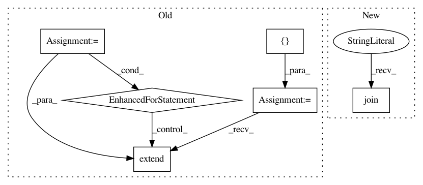

baa246d110ae14219b48f6ee4a81fcaf5c35ad09,pysos/sos_step.py,Run_Step_Executor,step_signature,#Run_Step_Executor#Any#,859
Before Change
def get_tokens(statement):
return [x[1] for x in generate_tokens(StringIO(statement).readline)]
tokens = []
for statement in self.step.statements:
if statement[0] in (":", "="):
tokens.extend([statement[1], statement[0]])
tokens.extend(get_tokens(statement[2]))
else:
tokens.extend(get_tokens(statement[1]))
if self.step.task:
tokens.extend(get_tokens(self.step.task))
return "".join(env_vars + tokens)
After Change
if var in env.sos_dict:
env_vars.append("{} = {}\n".format(var, env.sos_dict[var]))
return "".join(env_vars) + "---\n" + self.step_tokens
def expand_depends_files(self, *args, **kwargs):
"""handle directive depends"""
In pattern: SUPERPATTERN
Frequency: 4
Non-data size: 6
Instances
Project Name: vatlab/SoS
Commit Name: baa246d110ae14219b48f6ee4a81fcaf5c35ad09
Time: 2016-09-28
Author: ben.bog@gmail.com
File Name: pysos/sos_step.py
Class Name: Run_Step_Executor
Method Name: step_signature
Project Name: GoogleCloudPlatform/python-docs-samples
Commit Name: f427368dc042ade0b12459935014ce9dd4e626a5
Time: 2018-03-29
Author: dizcology@hotmail.com
File Name: vision/cloud-client/detect/detect.py
Class Name:
Method Name: detect_document
Project Name: GoogleCloudPlatform/python-docs-samples
Commit Name: f427368dc042ade0b12459935014ce9dd4e626a5
Time: 2018-03-29
Author: dizcology@hotmail.com
File Name: vision/cloud-client/detect/detect.py
Class Name:
Method Name: detect_document_uri
Project Name: dmlc/gluon-nlp
Commit Name: 8880acf0899efee237251cbd01c7ff81fc535789
Time: 2018-06-22
Author: szhengac@users.noreply.github.com
File Name: scripts/nmt/bleu.py
Class Name:
Method Name: _split_compound_word